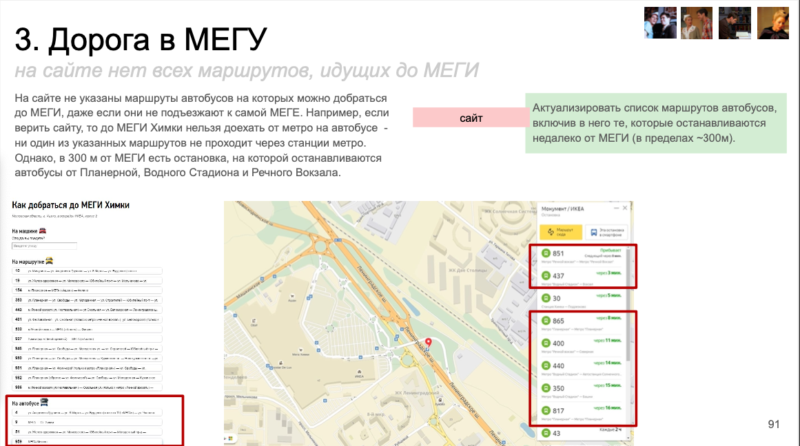
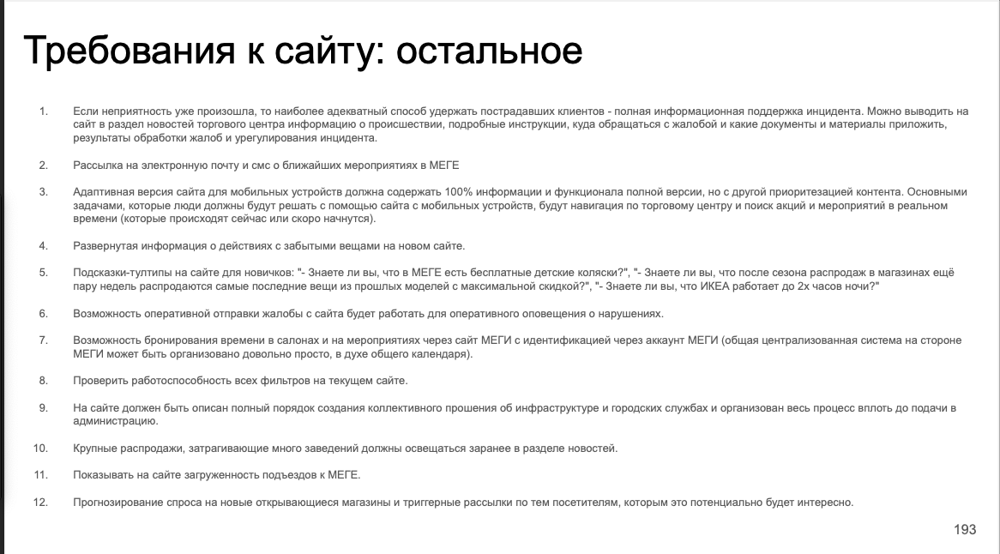
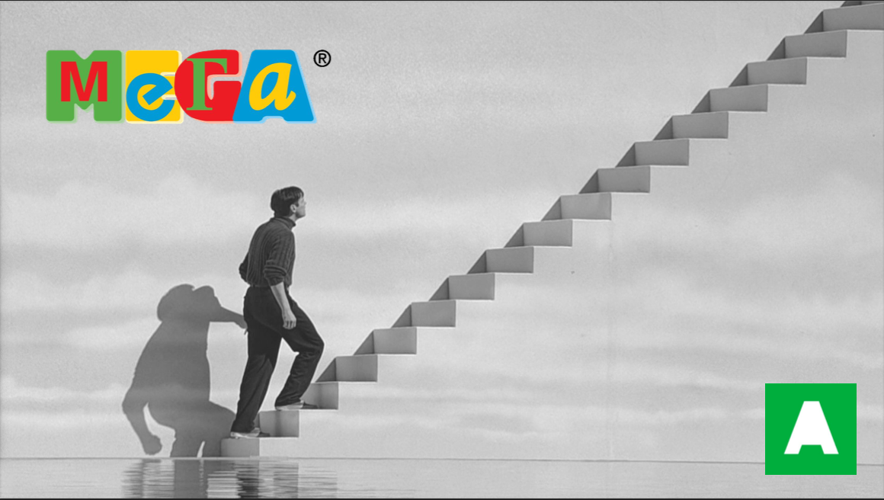

Как понять посетителя крупнейшего торгового центра страны, если для этого нужно провести месяцы в самой МЕГЕ.
На этом проекте я выполнял роль рядового аналитика в агентстве AGIMA: работал много и в самом торговом центре, в местах скопления трафика, и анализировал количественные данные с сайта. Итоговый проект опубликован на сайте агентства - там же указана моя фамилия среди авторов.

В результате исследования пользовательского опыта посетителей МЕГИ мы разделили аудиторию на семь глобальных сегментов, отличающихся друг от друга поведением. Каждый сегмент визуализирован в виде персонажа - собирательного образа представителей сегмента с ярко выраженными отличительными чертами. Для каждого персонажа описан его типичный сценарий посещения.

Основную часть отчёта составляет обзор потенциальных барьеров, с которыми сталкиваются персонажи. Слайд анализа сценариев содержит заголовок, обозначающий шаг, на котором в данный момент находится персонаж, и подзаголовок, описывающий, с чем именно на этом шаге связаны проблемы.

В «стратегии изменения клиентского опыта» собраны рекомендации, касающиеся работы самих торговых центров, а также бизнес-процессов - общих стандартов и правил, которые лежат в основе создания единого и целостного опыта клиентов в разных МЕГАХ.
В «задании на проектирование» собраны рекомендации, касающиеся нового сайта МЕГИ. Оно разделено по ключевым экранам и самостоятельным сущностям, к которым относятся рекомендации.
Семь сегментов аудитории, карта барьеров по шагам сценария и техническое задание на проектирование нового сайта - рабочие артефакты, которые агентство использовало в дальнейшей работе с ИКЕА.